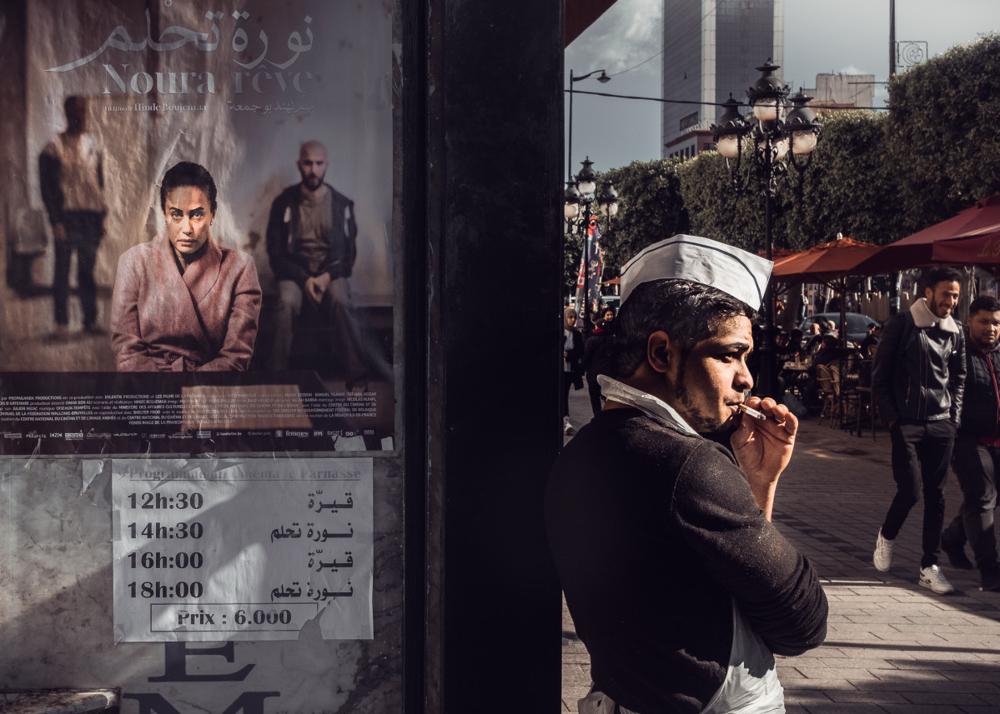
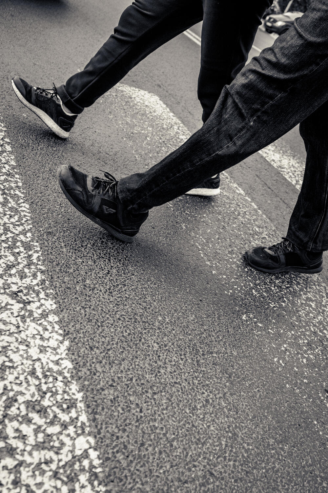

Czym jest fotografia uliczna?
Rodzaj fotografii, której tematem są przypadkowe,
odpowiednio uchwycone ujęcia życia ulicznego.
Jest to dyscyplina z pogranicza reportażu oraz fotografii artystycznej.
Rodzaje fotografi ulicznej

Dokumentalna
przedstawia sytuacje z życia codziennego

Detal
skupia się najczęściej na przedmiotach

Portretowa
polega na fotogrfowaniu najczęściej przypadkowo napodkanych osób
Spontaniczna - candid
polega na uchwyceniu ludzi z zaskoczenia